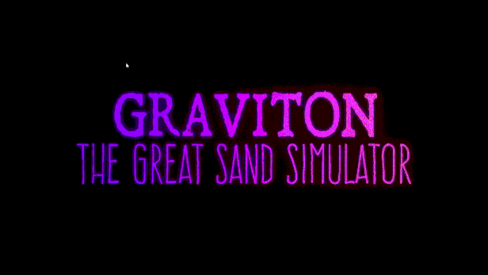
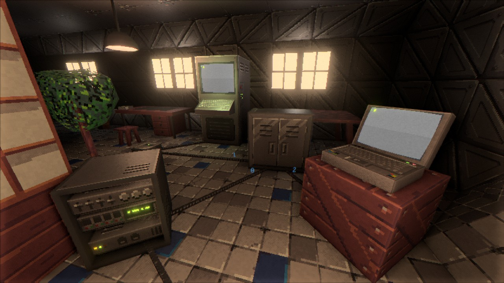
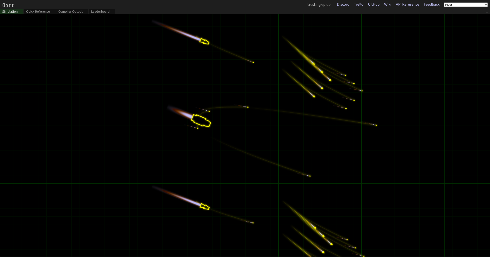
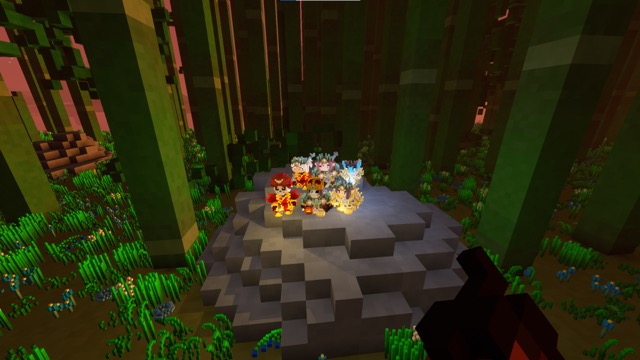
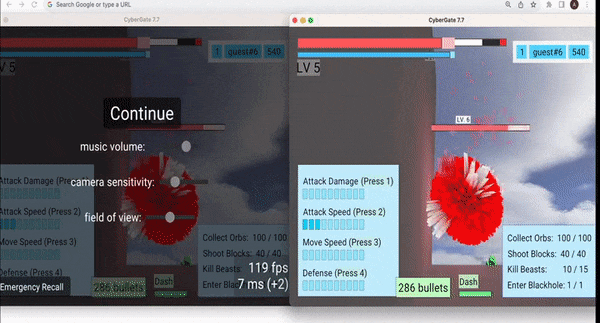
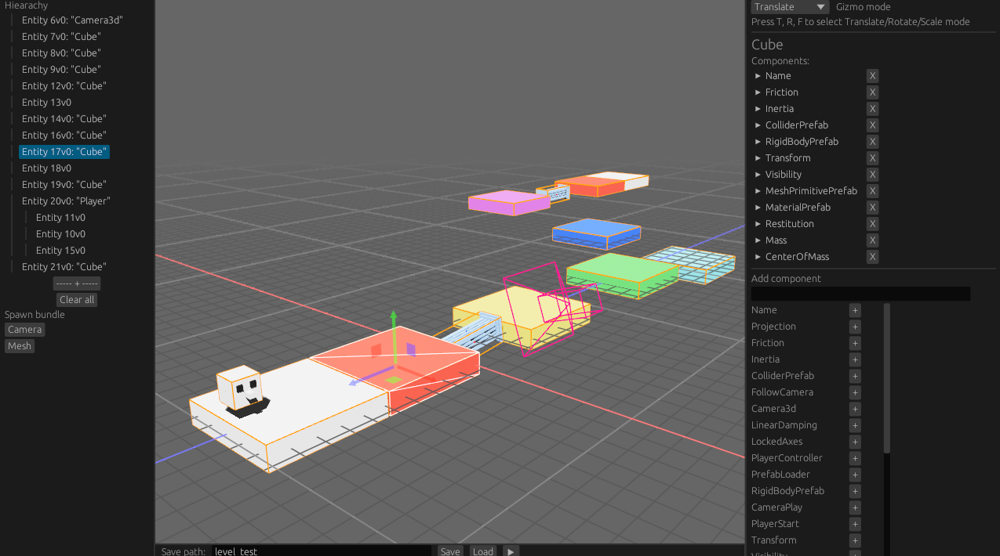
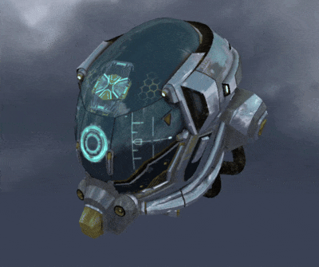

This Month in Rust GameDev #49 - August 2023
Welcome to the 49th issue of the Rust GameDev Workgroup’s monthly newsletter. Rust is a systems language pursuing the trifecta: safety, concurrency, and speed. These goals are well-aligned with game development. We hope to build an inviting ecosystem for anyone wishing to use Rust in their development process! Want to get involved? Join the Rust GameDev working group!
You can follow the newsletter creation process by watching the coordination issues. Want something mentioned in the next newsletter? Send us a pull request. Feel free to send PRs about your own projects!
- Announcements
- Game Updates
- Engine Updates
- Learning Material Updates
- Tooling Updates
- Library Updates
- Other News
Announcements
It’s been a while, huh? This newsletter is coming to you with a delay because
the project cost too much maintainer burden and was put on hold for a while.
Since then, we have had some restructuring and are back now, starting this month!
The exact details will be part of April’s newsletter, scheduled for release on May 3rd (just 5 days from now!)
See you all then!
Game Updates
Graviton - The Great Sand Simulator

Graviton - The Great Sand Simulator (Discord, Youtube) by @hakolao is a falling sand simulator in which you can define your own interactive sand rules.
Continuing the developer’s exploration into GPU sand simulation the app has been recently taken to another level with a complete rewrite. Now, with some training, you can program your own rules for the sand. Many example sands are provided from acid and blood to the classic Game of Life.
Recent updates include:
- Customizable sand with programmable rules.
- Shape & Mirror Draw Modes.
- New UI, graphics and render modes.
- Gif and Image export.
- Image import.
You can support the development by purchasing or wishlisting on Steam.
Tunnet

Tunnet (Steam, itch.io) is an upcoming short puzzle/exploration game about digging tunnels and building computer networks.
In August, a new version of the demo build has been released. Here are the most notable updates:
- The game is now better optimized to run smoothly on the Steam Deck.
- Some of the textures have been revamped and are now slightly more detailed.
- The animations of the character portraits have been improved.
- Several minor quality-of-life improvements like the ability to sprint have been made.
- A basic egui-based crash reporter will now be displayed when the game process ends unexpectedly.
Oort
 A fleet of ships
Oort (GitHub, Discord) by @rlane is a programming game where you write Rust code to control spaceships in combat against other players. Your code needs to manage the thrusters, guns, missiles, comms, and radar of each ship in your fleet. There’s a series of tutorials where you can solve key problems one by one, such as leading moving targets or missile guidance. The game runs in your browser via WebAssembly.
Oort has started running weekly tournaments and the AIs have gotten more and more sophisticated each time. Check out this recent tournament writeup where the top players discuss their strategies.
Discussions: r/rust
Tiny Glade

Tiny Glade (Twitter) is a small relaxing game about doodling castles.
This month, Tiny Glade was featured in the Future Games Show August Showcase with an exclusive new trailer.
The trailer and a number of accompanying screenshots demonstrate recent changes in the game, and especially show off the new global illumination and dynamic time passage.
Veloren
 A group of friends
Veloren is an open world, open-source voxel RPG inspired by Dwarf Fortress and Cube World.
In August, Veloren saw a network library update, new locations in the character selection screen, the implementation of a new portal graphic, and numerous translation updates. Moreover, improvements were made to the airship fixes, loot balancing, and group chat issues. There have also been upgrades to the dependency, a README update, and tweaks to the buff death message.
Ongoing projects currently in the works include the addition of Phoenix abilities, NPC arenas, frost Giga attacks, compasses, and a banking storage system. Other upcoming updates include an enhancement to the windmills, CI scripts, saving window size, the selection of a single-player world, the addition of lava material, and improvements to the weather network protocol. Work is also ongoing on ship movement, pet commands, Terracotta ruins, dwarven quarry, coastal towns, clifftown rework, and axe skills. They are also planning to implement physics interactions that increase your height when gliding, including the introduction of thermal and ridgelines.
August’s full weekly devlogs: “This Week In Veloren…”: #216.
CyberGate
 Two client windows controlling the same pawn simultaneously.
CyberGate (YouTube, Discord), CyberSoul is developing an ambitious multiplayer project, utilizing procedural generation and AI to offer a dynamic universe.
Tech Progress:
- Complete game framework overhaul.
- Addressed engine limitations.
- Upgraded game tools and utilities.
- Introduced Cosmos APIs for universe management.
- Redesigned privacy mechanisms.
- New character authentication system.
- Persistent player data.
- Player Accounts: Login, Register, Verify, Guests.
Also, this month’s gameplay changes include characters remaining active despite a client’s closure and saved player inventory, achievements, and settings.
Engine Updates
goku
goku (Discord) by @ladroid is a new 2D Rust game engine backed by SDL2. It’s currently compatible with Windows and WASM and features multi-language (Spa, Fra, Ger, Jpn) docs.
Quick Peek:
- Sprite sheets loading and animation support.
- Basic particle effects.
- Point, spot, and ambient lights.
- UI layer with ready widgets like buttons, checkboxes, and sliders.
- Audio support backed by SDL2 Mixer.
- Gamepad input support.
- Tile system and JSON format for describing scenes.
- Built-in support for parallax backgrounds.
- Simple timing and frame management utils.
- Behavior tree AIs.
Discussions: /r/rust
Learning Material Updates
Failing to build P2P Multiplayer Pong with Bevy
@chrisbiscardi published a video covering P2P multiplayer games with rollback networking and physics. This video dives into what makes it difficult and what parts work out of the box before identifying better potential paths to take in the future.
Discussions: Mastodon
Mobile Development with Bevy
@Nikl published two blog posts on the topic of mobile development using Bevy. The first post concentrates on getting builds ready for the Apple and Google App stores. It outlines how to use the tool x-build to create Android App bundles and some required changes to get iOS builds accepted by the App store.
A second post documents how to set up and configure a GitHub workflow to automate releases of a Bevy application to the Google Play Store.
Tooling Updates
Space editor

Space editor is an editor designed for Bevy engine that simplifies level and object template creation. Here are its key features:
- Intuitive UI is built on top of bevy-inspector-egui and egui-gizmo to easy objects manipulate.
- It supports the bevy_xpbd physics library, making customizing collider positions faster than ever.
- Run your levels directly from the editor. This enables quick and efficient development iteration.
- Save your levels and object templates in the standard Bevy scene format and spawn in game with just one line of code.
- Many custom structures that allow you to customize saved scenes equally conveniently, both via gui and directly editing the saved text file.
The Github project is free for use and open to contributions from everyone, be it with suggestions, bugs or PRs.
Library Updates
Dexterous Developer
Dexterous Developer by @lee-orr is an experimental hot-reload system for the Bevy game engine. Features:
- Define the reloadable areas of your game explicitly - which can include systems, components, and resources (with some limitations).
- Reset resources to a default or pre-determined value upon reload.
- Serialize/deserialize your reloadable resources & components, allowing you to evolve their schemas so long as they are compatible with the de-serializer.
- Mark entities to get removed on hot reload.
- Run systems after hot-reload.
- Create functions to set up & tear down upon either entering/exiting a state or on hot reload.
- Only includes any hot reload capacity in your build when you explicitly enable it - such as by using the CLI launcher.
- Cross-platform/cross-device hot reload - run a “hot reload server” on a dev environment, and execute the application elsewhere.
The library is quite new and currently known issues include: mobile/WASM support and the need to pre-define events & states.
nanogltf
 nanogltf+miniquad glTF viewer
nanogltf by @not-fl3 is a minimalist nanoserde-based glTF parser library that can load most of the glTF’s sample models and fairly complex Blender exported scenes.
Macroquad used to be notoriously bad at 3d. nanogltf is a part of a big macroquad overhaul with a goal to make it suitable for, at least, simple low-poly 3d games.
nanogltf comes with a a GL2+/Metal glTF miniquad-based viewer example.
Other News
- Other game updates:
- Tribes got multiplayer support, new art and economics rework.
That’s all news for today, thanks for reading!
Want something mentioned in the next newsletter? Send us a pull request.
Also, subscribe to @rust_gamedev on Twitter or /r/rust_gamedev subreddit if you want to receive fresh news!